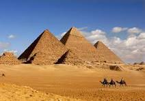

My favorite places to visit in Eygpt
The Primads
Pyramids are monumental structures with a rectangular base and four triangular sides that meet at a single point, famously built in ancient Egypt as tombs for pharaohs to ensure their passage to the afterlife. The Great Pyramid of Giza, built for Pharaoh Khufu, is the largest and most famous, constructed from millions of limestone and granite blocks over 4,500 years ago. These structures are not only testaments to ancient engineering and religious beliefs but also stand as the last surviving wonder of the ancient world.

Step pyramid
The Step Pyramid of Djoser at Saqqara, designed by Imhotep, is ancient Egypt's first pyramid and monumental stone structure, built around 2670–2650 BC as a revolutionary tomb for Pharaoh Djoser, evolving from stacked mastabas into six distinct steps, paving the way for later smooth-sided pyramids and symbolizing a major leap in architecture and royal burial practices. This massive limestone structure, part of a vast funerary complex, features complex underground passages and served as an eternal home and center for rituals, marking a significant turning point in Egyptian stone architecture.
.jpeg)